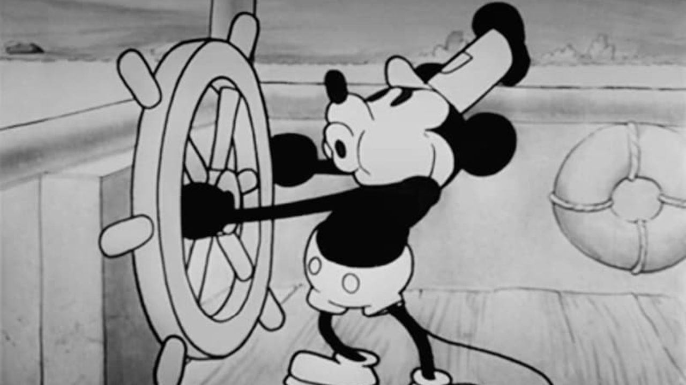

APA ITU ANIMASI
|

|
Animasi adalah proses membuat objek atau gambar bergerak atau berubah
dari satu keadaan ke keadaan lain secara berulang-ulang untuk menciptakan
ilusi pergerakan. Dalam dunia desain grafis, animasi sering digunakan
untuk membuat grafik, karakter, atau elemen-elemen lain pada layar
bergerak secara dinamis dan menarik.
Beberapa elemen kunci yang terkait dengan animasi meliputi:
|
- Frame-by-Frame Animation: Jenis animasi di mana setiap frame gambar
diperlihatkan secara berurutan dengan perbedaan kecil antara satu frame
dan yang berikutnya. Ketika frame ini diputar dengan cepat, menciptakan
ilusi gerakan.
- Animation Software: Perangkat lunak seperti Adobe Animate, Adobe After Effects,
Blender, dan banyak lainnya digunakan oleh desainer dan animator untuk membuat
animasi dengan berbagai tingkat kompleksitas.
- Keyframes: Titik-titik kunci di dalam animasi yang menentukan posisi atau keadaan
objek pada waktu tertentu. Perubahan antara keyframes digunakan untuk menghasilkan
pergerakan.
-
Timing dan Easing: Timing adalah pengaturan kecepatan atau durasi animasi antara keyframes,
sementara easing mengacu pada cara kecepatan berubah antara keyframes. Ini memengaruhi bagaimana
objek bergerak dan memengaruhi tampilan keseluruhan animasi.
- Interpolasi: Proses perhitungan perubahan nilai antara dua keyframes untuk menciptakan pergerakan
yang halus dan alami.
- Transisi: Transisi adalah jenis animasi yang digunakan untuk mengubah perubahan dari satu tampilan
ke tampilan lain dengan cara yang lebih halus daripada perubahan langsung.
- Animasi CSS dan JavaScript: Animasi dapat dicapai dalam desain web dengan menggunakan CSS (dengan properti
seperti transition atau animation) atau dengan menggunakan JavaScript untuk mengendalikan perubahan properti
elemen HTML.
- Animasi 3D: Di dunia desain dan pengembangan permainan, animasi sering melibatkan unsur 3D untuk menciptakan
lingkungan yang lebih realistis dan karakter yang lebih hidup.
|
CONTOH ANIMASI
|
|
|
Animasi digunakan dalam berbagai konteks, termasuk film, video game, situs
web interaktif, iklan, pendidikan, dan banyak lagi. Tujuannya dapat bervariasi dari menyampaikan
informasi dengan cara yang menarik hingga menciptakan hiburan yang menghibur. Animasi juga memiliki
peran penting dalam ilmu komputer, grafika komputer, dan industri hiburan secara keseluruhan.
|